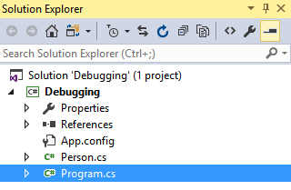
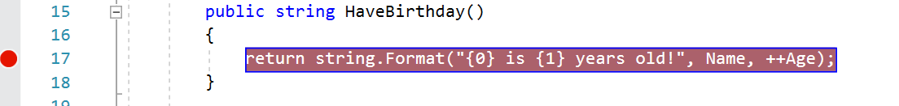
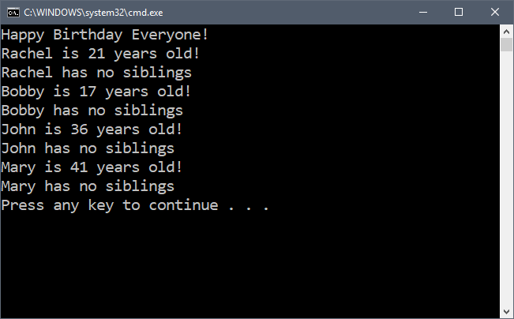

Duration
10 minutes
Lab goals
In this exercise, you will set new breakpoints to signal the debugger to run the program and stop at a set line. Next, you will attach conditions to the breakpoints and finally, you will view the locals, watch, and call-stack windows to review methods called, objects and variables in your program. If you use the lab instructions, your UI will look something like:

Required Assets
The provided Resources folder for this part contains a subfolder named Start with a solution you will use as starter code. The Completed subfolder contains a completed project you can use to check your work.
Steps
This is a group exercise, intended to be done with the instructor in an online class. You can also use the step-by-step instructions to do the exercise on your own. If you are working on your own, we encourage you to utilize the high-level goals defined above to work through the code, relying on the instructions below to fill in any necessary details.
Working with the Debugger
You will be using the Debugging project from the Start folder. You are going to practice adding new breakpoints, attaching conditions to the breakpoints, and running the program to view results in the breakpoint window. Next, you will utilize the watch window to observe the values and finally, view the call-stack window to see which methods led up to the current method call.
- Launch either Visual Studio for Mac or Windows and open the Debugging file in the Resources/Start folder.
- Open the Person.cs file located in the Debugging project. 
-
Locate the
HaveBirthdaymethod in thePersonclass and add a new breakpoint by clicking in the gutter of the code window or use the New Breakpoint Function located on the Breakpoint tab. Note that the "gutter" is the left edge of the text-editor window.

- Run the application in the debugger by clicking the "Play" or "Run" button in the toolbar, alternatively, you can press F5 to run the program in the debugger.
-
The application will stop in the debugger at your breakpoint, highlighting the line.
You can hover your mouse pointer over the use of the
NameorAgeproperty in the method and see their current value. - When you are ready to continue, press the Continue Execution button in the toolbar - this will look like a Play button icon in Visual Studio. This toolbar is only present when you are debugging an application.
- The debugger should stop each time the methods are called and this will happen several times in this application. You can use the locals window to view all local objects and variables within a scope while the debugger is stopped.
- You can also use the Watch window to view the values of an object. This allows you to type in new values to explore and even change the values by double-clicking on the presented value and entering a new value.
- Look at the call-stack window to see which method called the current method. The yellow arrow indicates the current method while Debugging.Program.Main is the function that called the current method.
- Remove your breakpoint by clicking on the breakpoint symbol in the gutter and then use the Continue Execution button to let the application run. 
-
Notice the output shows that none of the people have siblings. However, if you look at the data, many of them do, in fact, have a sibling count.
Your goal is to now isolate this bug and identify exactly what is happening using breakpoints and the watch window.
Start by setting a breakpoint inside the
DescribeFamilymethod. -
You only care about people that have siblings, but your breakpoint will currently always stop the program.
Next, you will add a condition to the breakpoint to only stop when the
Siblingsproperty is not zero. -
Right-click on the breakpoint glyph in the gutter and select Breakpoint Properties (or Properties).
This will display a dialog where you can add a condition to the breakpoint. We want to test for
Siblingsto be > 0. - Run the application in the debugger - it should stop only when the sibling count is > 0. Use the watch window, or hover over the value to see the count.
-
Try stepping through the
ifcondition, using the Step Into button on the toolbar - Notice it does not step into the correct branch. Why? What do you need to do to fix it?
- Apply your fix and run the application again to make sure it works now.


Summary
Congratulations! In this lab exercise, you completed the debugging process which included using breakpoints, viewing the locals window, reviewing the values of objects in the watch window, and reviewing the methods that called current methods.